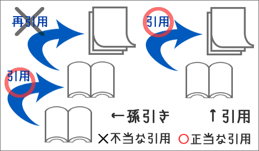
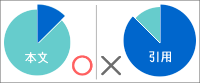

誠実な引用
他の文献や資料から文や語句などの表現を借りることを引用という。
いかなる場合にも、引用は、誠実に行なわれなければならない。誠実な引用とは、自分のことばと他人のことばとを明確に区別するということである。
引用であることを明示せずに行なわれた引用（無断引用）は、盗用、剽窃である。以下の点に十分に注意しなければならない。
- 自分のことばと他人のことばとを明確に区別する
- 自分の考えと他人の考えを明確に区別する
- 自分の発見と他人の発見を明確に区別する
引用と孫引き
引用するときには、オリジナルの資料から直接引用しなければならない。すでに引用されたものを再び引用すること（＝孫引き）はできるだけ避ける。

引用を行なう意味
引用は、他人の考えや他人が提示した情報を利用することによって、自分の議論や記述を補強するものである。
「要約」のレポートや「学習報告」のレポートを書く場合を除き、引用はあくまでも補助的な役割を果たすものである。レポートや論文を書くときには、必要なものだけを引用するようにしたい。
引用と本文の主従関係
論文は自分の主張を述べるものであるから、引用が中心となるような書き方は好ましくない。文章の中での引用の分量（割合）が大きくなりすぎないようにし、一つずつの引用も長くなりすぎないようにしなければならない。引用の分量にはっきりしたルールはないが、一応の目安として、文章の分量の10-15％を超えないようにするとよい。

引用では、自分で書いた文章の内容（＝本文）を他人の文章の内容（＝引用）が補強するようになっていなければならない。そのために、次のことに注意しよう。
- 事実やデータなどの情報を引用したときには、その情報に対する自分の見解や解釈を書くようにする
- 他人の主張やアイディアを引用したときには、その内容に賛成（同意）するか反対（反論）するかを明確に述べるようにする
引用の示し方
一般に引用の部分はカギカッコでくくって示される。また、引用をするときには、出典（どこから引用したのか）を示さなければならない。
引用の出典の示し方
出典は、『著者名・発行年（西暦）』のかたちで示すのが一般的である。なお、著者名は姓だけを示せばよい（共著の場合の著者名は、姓をナカグロ（「・」）かアンパサント（「＆」）で区切って示す）。著者名と発行年の間は１バイトのスペース（「 」）かカンマ（「,」）で区切り、全体をカッコでくくる。
※ここでは、語句や文を引用する場合の出典の示し方について説明している。図表などを引用するときの出典の示し方については、【→図版の出典】を参照せよ。
出典は、引用の直後に書く。なお、出典はカギカッコの中に書く場合も、カギカッコの後に書く場合もある。
- 「最も深刻な問題は、問題の深刻さに気づかないこと（牧原 2006）」である。
- 「最も深刻な問題は、問題の深刻さに気づかないこと」（牧原, 2006）である。
- 「最も深刻な問題は、問題の深刻さに気づかないこと（牧原・深川 2006）」である。
- 「最も深刻な問題は、問題の深刻さに気づかないこと」（牧原＆深川, 2006）である。
著者名が本文の一部になるような場合は、著者名の後ろに発行年をカッコでくくって示す。
- 牧原（2006）によれば、「最も深刻な問題は、問題の深刻さに気づかないこと」である。
- 牧原・深川（2006）によれば、「最も深刻な問題は、問題の深刻さに気づかないこと」である。
この場合も著者名は姓だけを示せばよい。「〜氏」「〜先生」「〜教授」「〜博士」などの敬称は不要である。
また、書籍や論文などから引用したときには、何ページからの引用かを示した方がよい。ページ数は発行年の後ろにコロン（：）で区切って示す。なお、２ページ以上の場合は、ハイフン「-」でつないで示すか、「f.」（"following page"の略。「11f.」は11ページと12ページとなる）「ff.」（"following pages"の略。「11ff.」は11ページからの数ページの意味になる）と書く。
- 「最も深刻な問題は、問題の深刻さに気づかないこと（牧原 2006：12）」である。
- 「最も深刻な問題は、問題の深刻さに気づかないこと（牧原, 2006：12）」である。
- 牧原（2006：12）によれば、「最も深刻な問題は、問題の深刻さに気づかないこと」である。
- 「無知は罪ではないが、罰を受けることがある（牧原 2006：12-13）」といわれる。
- 「無知は罪ではないが、罰を受けることがある（牧原, ：12-13）」といわれる。
- 牧原（2006：12-14）によれば、「無知は罪ではないが、罰を受けることがある」という。
- 「無知は罪ではないが、罰を受けることがある（牧原 2006：12f.）」といわれる。
- 「無知は罪ではないが、罰を受けることがある（牧原, 2006：12ff.）」といわれる。
- 牧原（2006：12ff.）によれば、「無知は罪ではないが、罰を受けることがある」という。
ウェブ上の資料から引用する場合
ウェブページやPDFファイルなど、ウェブ上の資料から引用する場合も、著者名などがわかっているときには、書籍の場合と同じように書く。
指宿（2000）は、「一般にインターネットでは新しい情報が流通しやすい。」と述べている。
著者名などがわからないときには、資料のタイトルを書く。タイトルは、カギカッコやクォーテーションマークでくくる。
「今後の社会資本政策に関するインターネット・アンケート調査」は、「高速道路の無料化を支持する声が多いが、これも利用料金の引き下げに結びつくことを期待している面が大きい」と分析している。
出典の表示が複雑になる場合は、注釈の形で示してもよい。【→注釈の付け方】
出典を示さなくてよいもの
広く知られている事実や知識、一般常識やことわざなどを書くときには、出典を示さなくてよい。
アメリカ大陸は、1492年にコロンブスによって発見されたと言われている。
６万人の兵士を失ったアメリカは、ベトナム戦争に敗退した。
「待てば海路の日和あり」ということわざがある。
引用部分の表現と表記
引用部分は本文と同じ文字で書く。文字のサイズを小さくしたり、ゴシック体、斜体、太字などにする必要はない。
引用はもとのままに写さなければならない。いかなる場合でも勝手に表現を変えてはいけない。引用する者が表現を変えた場合には、不正な引用となってしまう。
誤字や誤植
原文に明らかな誤字や誤植が含まれている場合にも、表現を変えてはいけない。誤字や誤植が含まれている場合は、誤字や誤植の部分の上か右下に小さく「（ママ）」と書く。
陳（1990：115f.）は、「いかに短気（ママ）でも、留学では日本語が生活言語」だという。
陳（1990：115f.）は、「いかに短気でも、留学では日本語が生活言語」だという。
漢字の旧字体
ただし、漢字の旧字体については新字体に改めてよい（例：戀→恋、來る→来る）。そのときは引用つ続けて「（旧字体は新字体に改めた）」、「（原文旧字体）」のように注記する。
恋といふものももとは欲より出つれども、ふかく情にわたるものなり。（旧字体は新字体に改めた）
不要な部分の省略
引用の途中の不要な部分は省略してもよい。省略する場合には、省略した部分に「……」、「［……］」、「（中略）」、「［…略…］」などと書く。ただし、もともとの文章の意味を変えてしまうような省略をしてはいけない。
国政は、国民の厳粛な信託によるものであつて、［……］その福利は国民がこれを享受する。
補足や強調
そのまま引用したのでは、意味がよくわからなくなってしまうときには、必要な情報を補足する。ただし、補足した部分は角カッコ（［］）か亀甲カッコ（〔〕）でくくり、「［］内引用者」、「〔〕内筆者」、「角カッコ引用者」、「：引用者注」などと注記する。
野原（2000：10）は、「［大衆は］愚かだが鈍くはない（角カッコ引用者）」と述べている。
野原（2000：10）は、「〔大衆は〕愚かだが鈍くはない（〔〕内筆者）」と述べている。
野原（2000：10）は、「［大衆は：引用者注］愚かだが鈍くはない」と述べている。
引用のなかに、特に注意を促したい（強調したい）部分がある場合は、下線（アンダーライン）を施したり、太字（ボールド）にしたりする。そのときには、「下線引用者」、「太字筆者」、「強調筆者」のように注記する。
「人間の能力は遺伝によって決まるのではない（下線筆者）」（葛西1993：321）といわれている。
「人間の能力は遺伝によって決まるのではない（太字引用者）」といわれている（葛西1993：321）。
もともとの文章に補足や強調があり、それが引用者によるものではないことを示す必要がある場合には、「角カッコ原文」、「下線原文」などと書く。
葛西（1993：321）は、「能力は環境に左右されないわけではない（下線原文）」という。
なお、引用をするときの表現・文型については【→引用する表現】を参照せよ。
長い引用と短い引用
引用には、文のなかの語句や文レベルの短い引用と、段落レベルの長い引用とがある。長い引用と短い引用の区別は、文の数が２以下の引用は短い引用、３以上は長い引用と考えればよいだろう。
なお、複数の段落を含むような引用は、できるだけ避けた方がよい。複数の段落を含む引用が必要なときには、内容を要約して引用する。【→内容を要約した引用】
短い引用の示し方
短い引用では、引用をカギカッコ（「」）でくくって示す。そのとき、出典もあわせて示すようにする。
出典を示す位置は、引用の末尾か、引用の直後がふつうだが、引用を含む文の末尾でもよい。
- 「早期化と矮小化の同時進行（牧原 2006）」こそが問題だと指摘される。←引用の末尾
- 「早期化と矮小化の同時進行」（牧原 2006）こそが問題だと指摘される。←引用の直後
- 「早期化と矮小化の同時進行」こそが問題だと指摘される（牧原 2006）。←引用を含む文の末尾
引用のカギカッコ（「」）の中のカギカッコは、二重カギカッコ（『』）になる。つまり、カギカッコを含む文を引用するときには、原文のカギカッコを二重カギカッコ（『』）に変えなければならない。
もとの文
便利さに慣れきった現代人は「生きる力」が弱い。
→引用文
神田（1994：18）は「便利さに慣れきった現代人は『生きる力』が弱い。」と指摘している。
また、外国語で書かれた文を引用する場合は、本文と同じ言語に訳して引用する（語学などの論文で例文を示す場合を除く）。そのときには、「（筆者訳）」、「［引用者訳］」のような注記を忘れずに書く。
劉（1986：224）では、「台湾の高度な経済発展への影響は小さい［引用者訳］」と予測されていた。
長い引用の示し方
長い引用では、引用をカッコでくくる必要はない。長い引用は、引用の全体を本文より２字下げて書く。また、引用の前後は１行あけるようにする。また、引用の先頭は字下げしなくてよい。
長い引用をするときには、「牧原（1986：5-9）は、次のように述べている。」とか「杉本（1999：12f.）は、次のように指摘している。」のように書いてから、引用を示すようにするとよい。
文体論の目的は、それを解明すべく文体について論じるものである。但、ムーナン（1970：219）
は、次のように指摘している。
文体は人間的な現象で非常な複雑性を持つ……したがって、いつの日にか文体についての説明
をまとめあげられるとしたら、その説明は極度に複雑なものであろう。文体の定義の簡潔に縮
めた表現はすべて一方的な貧困化であろうし、そのことはずっと変わることはあるまい。
文体論の歴史は特に短いものでないが、その探求はいまだ発展の途上にあるといえる。英語文体
論《スタイリスティックス》は、米英が〈国際語〉を一極支配するなか、英語教育の版図拡大とと
もに大きく発展した。他方、日本語文体論は、70年代以降目立った進展がないともいわれる。
また、引用の前に出典が示されないときには、かならず引用のあとに出典を明示する。
数理的手法に対してどのような態度をとるにせよ、操作主義的文体観は、一方で書き手との関係で
文体を理解しようとし、他方で所与の有機的な統一体を前提する傾向がある。しかし、例えば、次の
ような見解が事実と異なることは、e-textを前にしてはおのずと明らかである。
文章とは、有機的な統一体である言語表現の一全体を意味する。始めがあって、終りがあり、そ
の間に有機的に連続する脈絡があって、それ自体をすべてとして完結している一全体を指す、た
とえば、一作品というようなものである。（永尾 1975：11）
また、ヨリ現実的な問題として、原著者に集約されない分散的なテクストにあって、原著者推定は
象徴的問題といえる。
なお、引用をするときの表現・文型については【→引用する表現】を参照せよ。
内容を要約した引用
長い引用では、内容を要約して引用することもできる。なお、短い引用では、内容を要約するよりももとの文章を直接引用した方がよいだろう。【→参照の方法】
内容を要約して引用するときには、次のような形で書く。
- 野田（1992）は、……と述べている。
- 野田（1992）は、……と指摘している。
- 野田（1992）によれば、……である。
- 野田（1992）によれば、……ということである。
- 野田（1992）によると、……だという。
- 野田（1992）がいうように、……である。
なお、要約して引用する場合も必ず出典を明記する。また、引用する内容をカギカッコではくくってはならない。
クリステヴァ（1983：20ff.）は、書き手こそが最初の読み手であると述べている。
クリステヴァ（1983：20ff.）によれば、最初の読み手は必ず書き手自身なのである。
クリステヴァ（1983：20ff.）がいうように、書き手こそが最初の読み手である。
最初の読み手は書き手だといわれる（クリステヴァ1983：20ff.）。
要約して引用するときには、もともとの文章の内容が正しく伝わるよう十分に注意しなければならない。
なお、内容を要約した引用の示し方について、よりくわしくは【→参照の方法】を参照せよ。また、引用をするときの表現・文型については【→引用する表現】を参照せよ。